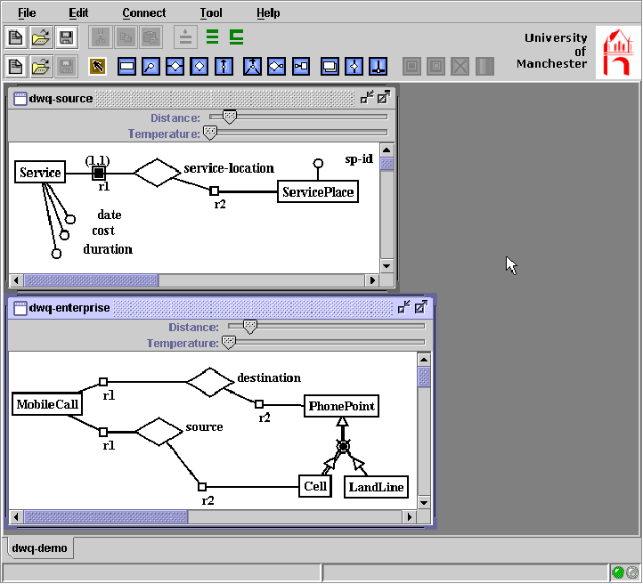
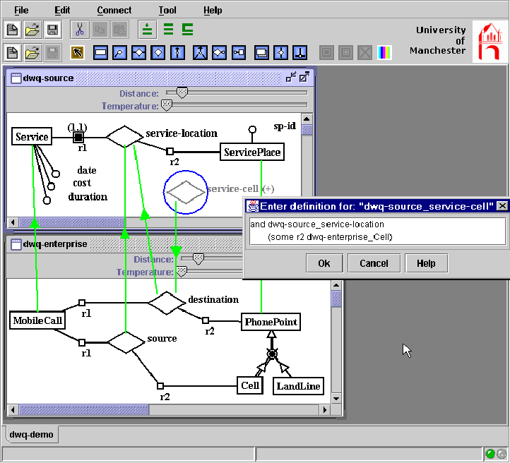
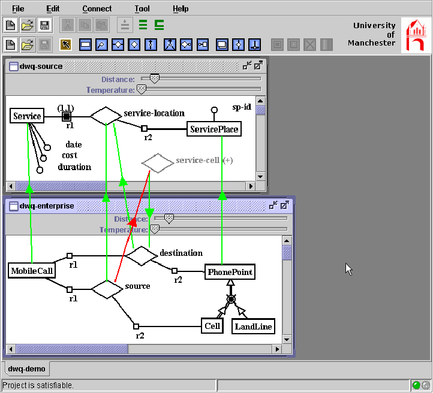
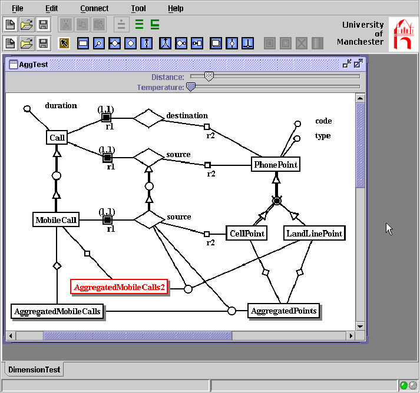

| Overview | The Metadata Repository ConceptBase |
Source Integration
and Conceptual Modelling |
Data Reconciliation | References |
Our approach on source integration is based on extended conceptual modelling techniques. We will first introduce the conceptual modelling approach and then present the tool i.com for intelligent conceptual modelling.
The DWQ approach to source integration is incremental: whenever a new portion of a source is taken into account, the new information is integrated with an “Enterprise Model”, and the necessary new relationships are added. Thus, the Enterprise Model provides a consolidated view of the concepts and the relationships that are important to the enterprise, and have been currently analyzed. Such a view is subject to changes and additions as the analysis of the information sources proceeds. The main concepts used in our approach are shown in the figure:
The Enterprise Model is a conceptual representation of the global concepts and relationships that are of interest to the Data Warehouse application. It provides a consolidated view of the concepts and relationships that are important to the enterprise, and have been currently analyzed. Such a view is subject to changes and additions as the analysis of the information sources proceeds. The Description Logic formalism we use is general and powerful enough to express the usual database models, such as the Entity-Relationship Model, and the Relational Model. Moreover, there are suitable inference techniques associated with the formalism, which allow for carrying out several reasoning services on the representation. The formalism is hidden from the user of the DWQ tools who only uses a graphical interface.
For a given information source S, the Source Model of S is a conceptual representation of the data residing in S. Again, our approach does not require a source to be fully analyzed and conceptualized. Source Models are expressed by means of the same formalism used for the Enterprise Model.
The notion of interdependency is a central one in our approach. Since the sources are of interest in the overall architecture, integration does not simply mean producing the Enterprise Model, but rather to be able to establish the correct relationships both between the Source Models and the Enterprise Model, and between the various Source Models. We formalize the notion of interdependency by means of intermodel assertions, introduced in [CL93]. An intermodel assertion states that one object (i.e., class, entity, or relation) belonging to a certain Model (either the Enterprise or a Source Model) is always a subset of an object belonging to another Model. This simple declarative mechanisms has been showed to be extremely effective in establishing relationships among different database schemas (see also [Hul97]). We use again a logic-based formalism to express intermodel assertions, and the associated inference techniques provide a means to reason about interdependencies among models.
The logical content of each source S, called the Source Schema, is provided in terms of a set of definitions of relations, each one expressed in terms of a query over the Source Model of S. The logical content of a source represents the structure of data expressed in terms of a logical data model, in the demo the Relational Model. In our framework, such a structure is provided by specifying the connection with the conceptual representation of the source. In other words, the logical content of a source S, or of a portion thereof, is described in terms of a view over the Source Model associated with S (and, therefore, of the Conceptual Data Warehouse Model). Wrappers map physical structures to logical structures.
The logical content of the materialized views constituting the Data Warehouse, called the Data Warehouse Schema, is provided in terms of a set of definitions of relations, each one expressed in terms of a query over the Conceptual Data Warehouse Model. Similar to the sources, each portion of the Data Warehouse Schema is described in terms of a view over the Conceptual Data Warehouse Model. How a view is actually materialized starting from the data in the sources is specified by means of suitable mechanisms, called mediators.
The
demo has shown the following tasks within steps 1 and 2 of the methodology (figure)
for a few Telecom Italia database sources related to contracts :
Enterprise and Source Model construction. The Source Model corresponding to the new source is produced, if not available. Analogously, the conceptual model of the enterprise is produced, if not available.
Source Model integration. The Source Model is integrated into the Conceptual Data Warehouse Model. This can lead to changes both to the Source Models, and to the Enterprise Model. Moreover, intermodel assertions between the Enterprise Model and the Source Models and between the new source and the existing sources are added to the Conceptual Data Warehouse Model. The designer can specify such intermodel assertions graphically as illustrated in the screenshot, and can invoke various automated analyses supported by the Description Logic formalization.
Source and Data Warehouse Schema specification. The Source Schema corresponding to the new source (or, corresponding to a new portion of the source) is produced. On the basis of the new analyzed source, an analysis is carried out on whether the Data Warehouse Schema should be restructured and/or modified. In all these tasks, the metadata repository stores the values of the quality factors involved in source and data integration, and helps analyze the quality of the design choices. The Quality Factors of the Conceptual Data Warehouse Model and the various schemas are evaluated and a restructuring of the Models and the schemas is accomplished to match the required criteria.
i.com allows for the specification of multiple EER diagrams and inter- and intra-schema constraints.Complete logical reasoning is employed by the tool to verify the specification, infer implicit facts, and manifest any inconsistencies.
The first screenshot shows the modeling of a conceptual source model and the conceptual enterprise model.

If the user has defined the models, the inter-model assertions can be defined. These are constraints or relationships between different conceptual models, e.g. a source model and the enterprise model.

Then, the user can use the tool to derive implicit relationships between the concepts. The tool uses a description logics reasoner for this task. The result is shown by a red error in the next picture.

Finally, the tool can be used to define conceptual models for multidimensional aggregations, including the hierarchies of dimensions.
